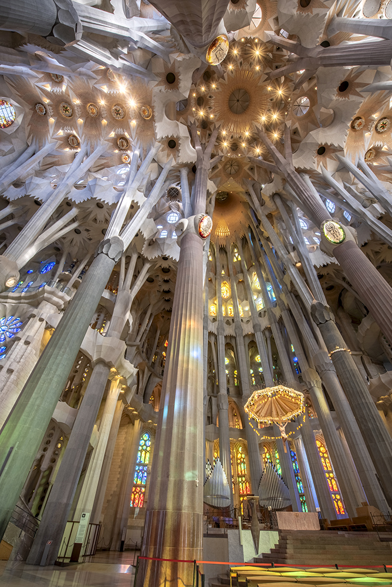
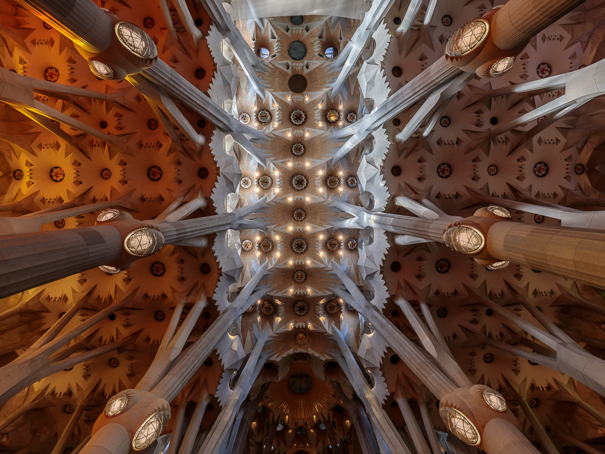
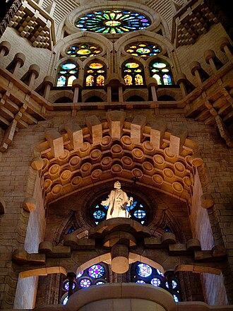

Planul bisericii este în formă de cruce latină, cu cinci nave. Bolțile navei centrale ajung la o înălțime de patruzeci și cinci de metr, în timp ce bolțile navale laterale ating treizeci de metri. Transeptul are trei nave. Coloanele sunt dispuse pe o grilă de 7,5 metri. Cu toate acestea, coloanele absidei (nișă semicirculară sau poligonală care închidea nava centrală a unei bazilici romane), care se sprijină pe fundația lui del Villar, nu respectă această grilă, necesitând o secțiune de coloane în jurul ambulatoriului pentru a face tranziția la grilă, creând astfel un model în formă de potcoavă în aranjamentul acelor coloane.



Coloanele din interior sunt un design unic al lui Gaudí. Pe lângă ramificarea lor pentru a susține greutatea, suprafețele lor în continuă schimbare sunt rezultatul intersecției diverselor forme geometrice. Cel mai simplu exemplu este cel al unei coloane cu bază pătrată care evoluează într-un octogon pe măsură ce se înalță, apoi într-o formă cu șaisprezece laturi și, în cele din urmă, într-un cerc. Acest efect este rezultatul unei intersecții tridimensionale a coloanelor elicoidale.
Practic, niciuna dintre suprafețele interioare nu este plană; ornamentația este cuprinzătoare și bogată, constând în mare parte din forme abstracte care combină curbe netede cu puncte ascuțite. Chiar și detaliile, precum balustradele din fier pentru balcoane și scări, sunt pline de elaborări curbilinii.
Temele din întreaga decorațiune includ cuvinte din liturghie. Turnurile sunt decorate cu cuvinte precum Osana, Excelsis și Sanctus; marile uși ale Fațadei Pasiunii reproduc fragmente din Pătimirile lui Isus din Noul Testament în diverse limbi, în principal în catalană; iar Fațada Gloriei va fi decorată cu cuvintele din Crezul Apostolilor, în timp ce ușa principală reproduce întreaga rugăciune Tatăl nostru în catalană, înconjurată de multiple variante ale frazei Pâinea noastră cea de toate zilele, dă-ne-o nouă astăzi în alte limbi.
Cele trei intrări simbolizează cele trei virtuți:
Fiecare dintre ele este dedicată, de asemenea, unei părți din viața lui Hristos. Fațada Nașterii este dedicată nașterii sale; include și un chiparos care simbolizează pomul vieții. Fațada Gloriei este dedicată perioadei de glorie a lui Hristos. Fațada Pasiunii simbolizează suferințele lui Hristos. Turnul absidei poartă textul rugăciunii Bucură-te, Marie în latină.
Anumite zone din sanctuar vor fi desemnate pentru a reprezenta diferite concepte, cum ar fi sfinți, virtuți și păcate.